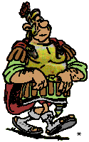
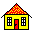

Dictionary of
Botanical Epithets
Eheu fugaces anni.
Horace
The epithets are largely taken from alpine plants and found in the seed lists of the North American Rock Garden Society's seed list, alpine plant nursery catalogs and alpine references.

Send comments to
chuckg@winternet.com
© 2019
Last updated
12/30/05
abbreviatulus - abruptus
abscissus - abundiflorus
acaciifolius - accumbens
acephalus - achras
acicularifolius - acoroides
acraeus - actinophyllus
aculeaticarpus - adductus
adelostoma - admixtus
adnascens - adustus
advenus - aenigmaticus
aequalis - afer
affinis - ageratoides
agglomeratus - ailanthoides
aiolopeplus - alatus
albanicus - alexandrinus
algarbiensis - alkekengi
allantoides - alnus
aloides - alsinoides
altaclerensis - alyssoides
amabilis - amarus
ambigens - amorphus
ampelinus - amygdalus
anacampseros - ancyrensis
andegavensis - anfractuosus
angelensis - anserinus
antarcticus - apiifolius
apocarpus - apus
aquaticus - araxanus
arborescens - ardens
arenarius - areolatus
argentaceus - arrectus
artemisioides - asiaticus
asper - atlanticus
atramentarius - aulicus
auratus - avicularis
axillariflorus - azureus
baccatus - banaticus
barba-jovis - beatus
belgicus - bibullatus
bicapsularis - bidentis
bifarius - bilocularis
bimaculatus - binominatus
bipartitus - birameus
bisanctus - blatteus
blepharantherus - borealis
botrycephalus - botuliformis
brachiatus - brassicoides
breviaculeatus - bubalinus
buccinator - bugulifolius
bulbifer - byzantinus
cacaliaster - caducus
caelestinus - cajanoides
calaber - calyptriformis
camelinus - canus
caperatus - caput-medusae
cardinalis - catharticus
cauda-felina - cephalotes
ceraceus - chartaceus
cheilanthus - chionopappus
chlamydeus - chordorhizos
chrysacanthion - ciliosus
cinctus - citriodorus
clandestinus - cochleatus
coelestinus - columnifer
comans - comptus
concavus - copiosus
coracinus - cous
crassicarpus - creticus
crinitus - cryptoceras
cubicus - cupuliformis
curtifolius - cuspidifolius
cyananthus - cymosus
cyperoides - cytisoides
dacicus - debilis
decapetalus - demissus
dendricola - diastrophis
dicarpus - dioicus
diphyllus - distylus
divaricatissimus - durior
ebeneus - emarginatus
enneacanthus - erectus
eriantherus - erumpens
erythrinus - eximius
exoticus - extraaxillaris
fabaceus - fenestrellatus
feracissimus - filix-mas
fimbriatulus - fistulosus
flabellatus - flexuosus
floccosus - fontinalis
formosior - fugax
fulgens - fuscus
gaditanus - giganteus
gilviflorus - gilvostriatus
glabellus - glutinosus
glycyphyllos - gnidius
gracilentus - gypsicola
hadriaticus - heptaphyllus
herbaceus - hesperius
heteradenus - hippocastanum
hirsutior - homophyllus
horizontalis - hymenorrhizus
hyperboreus - hyssopifolius
ibericus - inaequalis
incanescens - inops
insectifer - ionanthus
iridaceus - italicus
jubatus - junior
labiatus - ladanifer
laeteviolaceus - lappaceus
lasiacanthus - laureola
laxiflorus - leontopodius
lepidophyllus - leptotes
leucanthemus - lilliputianus
linearifolius - lobatus
lonchitis - lusitanus
luteoalbus - lyratus
macedonicus - manicatus
margaritaceus - medullaris
megacalyx - mellitus
membranaceus - meteoricus
micranthiformis - mitissimus
modestus - mollissimus
monacanthos - mucronulatus
multibracteatus - mutilus
myriophyllus - myrtinervius
nana - nicaeensis
nidiformis - nocturnus
nodiflorus - nummularius
nutans - nutans
obconicus - obscurus
obtusangulus - oculatus
odontolomus - opacus
ophianthus - oreophilus
orientalis - ovinus
oxycarpus - oxysepalus
pabularius - paludosus
pamphylicus - papyrifer
paradoxus - pauperrimus
pavoninus - pelviformis
pendulinus - pes-tigridis
petasitis - phryganodes
phyllanthos - pilulifer
pindicola - pisifer
planiflorus - pneumonanthis
podocarpus - poeticus
politus - pravissimus
primulaceus - pruinosus
pseudarmerius - pterocephalus
pubentior - puellaris
pulchellus - purpureus
pusillus - pygmaeus
pyramidalis - pyroloides
quadrangularis - quinquevulnus
racemosus - rapaceus
reclinatus - reptans
resinifer - rhizophyllus
rhodotrichus - roridus
rosaceus - rotundus
rubellus - rusticus
ruta-muraria - rutilus
saccharatus - saponarius
sarcocaulis - saxum
scaber - scutatus
secundiflorus - sensibilis
septemfidus - septentrionalis
sericatus - sexstylosus
sicula - sinuatus
sobolifer - speculum-veneris
sphacelatus - spurius
squalidus - stannensis
stella - stolonifer
stramineus - suavissimus
subacaulis - sylvestris
syriacus - syriacus
tabularis - telephium
tenacissimus - testaceus
tetracanthus - thessalus
thymifolius - torus
trachelius - tremulus
triandrus - tubulosus
tulipifer - typhinus
uberior - uncinatus
undatus - urceolatus
urens - uvarius
vagans - vegetus
venenosus - victorialis
villiflorus - violaceus
virens - volubilis
vulcanicus - vulpinus
xanthinus - xylorrhiza
yezoalpinus - yunnanensis
*
Cartoon by Uderzo (Asterix & Obelix)